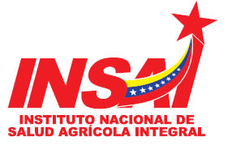

El 03 de junio del 2008 se fundo el Instituto Nacional de Salud Agrícola Integral (INSAI), es un organismo del
Estado encargado de velar que se cumpla la legislación sobre defensas zoosanitarias y fitosanitarias
impidiendo la introducción y/o diseminación de enfermedades y plagas que atentarían contra la sustentabilidad
y soberanía agroalimentaria en el país. Pero además es un ente encargado de proyectarse para coadyuvar en el
logro de una agricultura sustentable, de amplia incorporación y participación de todos los sectores del campo
y del derecho al disfrute de un ambiente sano, seguro y ecológicamente equilibrado.
A lo largo de los años a contribuido con el fortalecimiento del Sistema Nacional de Protección
y Defensa Fitosanitario y Zoosanitario en el marco del Desarrollo agrario Socialista a través
de proyectos y acciones que promuevan la Salud Agrícola Integral y la Participación Popular,
garantizando así la Soberanía y Seguridad Agroalimentaria.
Actualmente, el Instituto Nacional de Salud Agricola Integral continúa en su labor en
la protección de los animales, la seguridad alimentaria y el bienestar de nuestro país.
Localización:
Se encuentra ubicada en Barquisimeto estado Lara , municipio Iribarren,
en calle los abogados entre carrera 13 y 14,frente al edificio Pumerca.
Organizaciones Vinculadas con el Proyecto:
El siguiente proyecto socio tecnológico, plan de mantenimiento preventivo para los equipos
de computación de la Instituto Nacional de Salud Agricola Integral, tiene como propósito proporcionar
y ejecutar un plan de mantenimiento preventivo, para así mejorar la
eficacia del personal a la hora de trabajar, del mismo modo se beneficiarían todas aquellas personas
que solicitan el servicio de dicha institución, se vincula con la Universidad Politécnica Territorial Andrés Eloy Blanco (UPTAEB) ya que vincula con el proyecto socio tecnológico.
 En la investigación utilizando una metodología cuantitativa para mejorar la calidad de las evaluaciones
basadas en las encuestas, ya que ayudan a generar hipótesis de evaluación,
refuerza el diseño de cuestionarios para las encuestas y amplían las conclusiones de la evaluación cuantitativas.
En la investigación utilizando una metodología cuantitativa para mejorar la calidad de las evaluaciones
basadas en las encuestas, ya que ayudan a generar hipótesis de evaluación,
refuerza el diseño de cuestionarios para las encuestas y amplían las conclusiones de la evaluación cuantitativas.